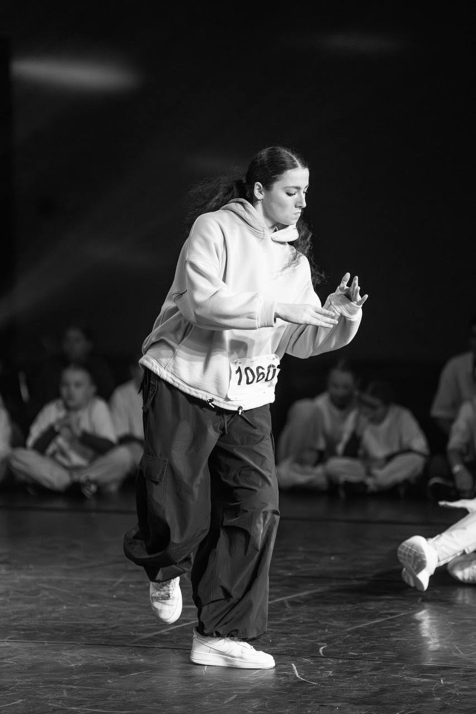

Exploaring Dance as a Powerful Voice
Today, the dance industry is filled with incredible talent - dancers, teams, and performances that mesmerise with their flawless technique and athleticism. However, I believe that beyond the captivating choreography and physical mastery, dance holds a greater purpose. It is not just an art form but a powerful voice - a tool that is able to command attention and shed light on global issues. One of my professional goals as a dancer is to develop the idea that dancers have the unique ability to communicate important messages by transcending words to inspire change and ignite conversation.
